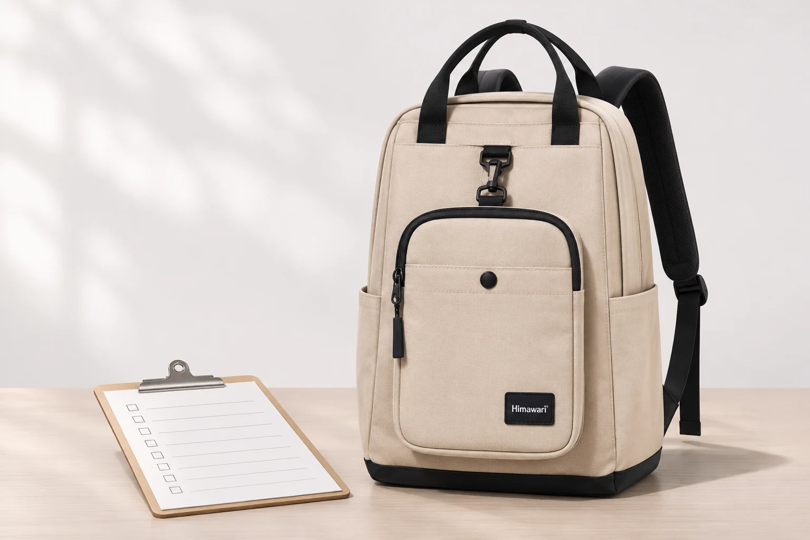
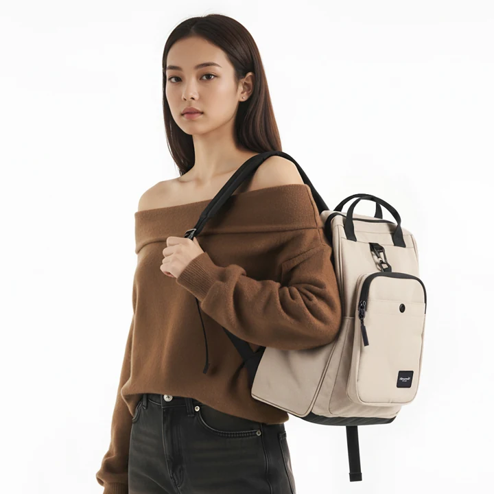
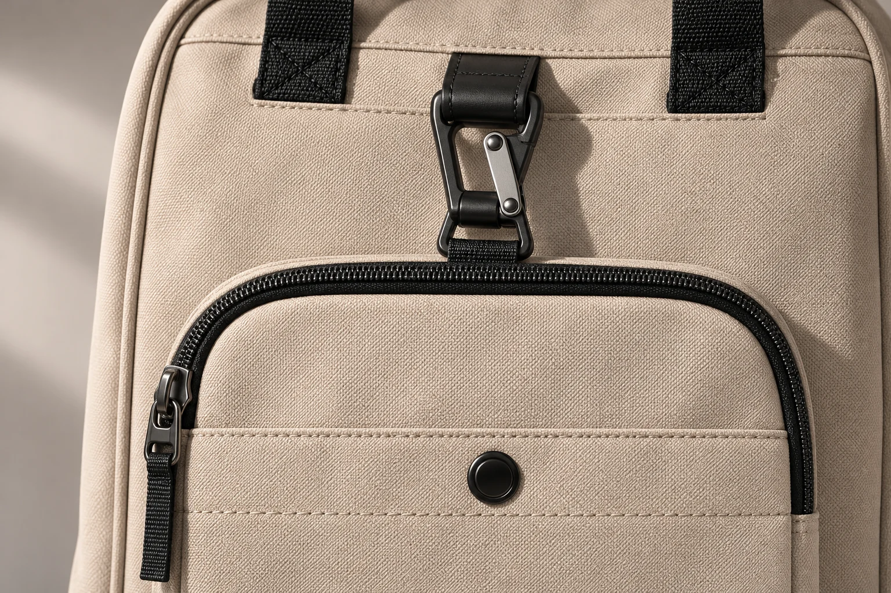

숄더백이 함께 보이는 백팩, 900g은 어디까지 잰 걸까

백팩을 고르며 상품 페이지의 숫자를 메모해 둡니다. 크기 28 × 40 × 17cm, 무게 900g. 이렇게 두 줄이면 충분해 보입니다. 그런데 같은 페이지에 숄더백의 치수도 나오고 사진에서는 작은 가방이 백팩 앞에 놓여 있습니다. 이때 메모에 ‘숄더백 포함’이라는 말을 더해도 될까요. 그 말을 붙이는 순간, 판매 자료에 적힌 숫자에 측정 범위까지 더하게 됩니다.
히마와리 No.0403 베이지 제품 정보의 상품명에는 백팩과 크로스백이 함께 들어갑니다. 제원 안내에는 백팩의 외부 치수와 숄더백의 치수가 따로 적혀 있습니다. 중량은 900g으로 안내하지만 숄더백을 포함해 잰 값인지는 기재하지 않았습니다. 같은 모델 번호 아래에서도 치수와 중량의 범위는 항목마다 다르게 안내될 수 있습니다.

17cm 옆에는 백팩이라고 적습니다
백팩의 외부 크기는 가로 28 × 세로 40 × 폭 17cm입니다. 제품의 측정 안내는 2026년 9월 14일 제조사 카탈로그 22페이지의 0403을 기준으로 삼습니다. 생산 시기와 측정 방식에 따라 차이가 있을 수 있다는 설명도 붙어 있습니다. 다른 백팩과 크기를 비교할 때 17cm는 앞뒤 폭을 읽는 자리에 놓으면 됩니다.
숄더백은 23 × 18cm로 별도 표기됩니다. 안내에는 두 방향의 치수만 나옵니다. 이 숫자를 백팩 크기의 다음 두 항목처럼 이어 쓰면 어느 가방이 얼마인지 구별하기 어려워집니다. 숄더백의 폭이나 내부 공간까지 궁금하다면 23 × 18cm 옆에 그 정보가 따로 있는지 확인해야 합니다. 외부에 표시된 치수만으로 물건이 입구를 지나는지까지는 알기 어렵습니다.
두 크기를 함께 읽을 때 생기는 질문도 있습니다. 예를 들어 사물함에 넣을 가방을 고른다면, 앞쪽에 작은 가방이 놓인 사진의 모습 그대로 넣을지부터 생각하게 됩니다. 이때 필요한 값은 그 상태에서 가장 앞으로 나온 곳까지의 폭입니다. 백팩의 폭 17cm에 숄더백 치수인 18cm를 더해도 그 값이 나오지 않습니다. 숄더백의 18cm에는 앞뒤로 얼마나 돌출하는지에 관한 설명이 없기 때문입니다.
사진에서 알아볼 부위와 숫자의 기준
No.0403 베이지의 원본 사진에는 검은 손잡이가 달린 큰 몸판과 그 앞에서 검은 테두리로 윤곽이 드러나는 작은 직사각형 가방이 보입니다. 판매 안내를 읽다가 어느 부분을 말하는지 헷갈리면 사진에서 이 위치를 짚을 수 있습니다. 사진을 보내며 문의할 때도 ‘앞에 보이는 작은 가방’이라고 하면 어느 부위를 말하는지 찾기 쉽습니다.

제원표에서 백팩 기준이라고 밝힌 정보는 외부 크기입니다. 그 문구를 읽고 바로 아래나 옆의 중량에도 같은 범위를 적용하면 900g을 본체만의 무게로 받아들이게 됩니다. 반대로 작은 가방이 앞에 보이는 사진을 중량의 기준으로 삼으면 900g을 합산 무게로 읽게 됩니다. 현재 자료에 적을 수 있는 표현은 ‘중량 900g 표기, 숄더백 포함 여부 미기재’입니다. 크기에서 확인한 범위를 중량에도 옮기기 전에 멈추는 편이 정확합니다.
주문 구성과 측정 구성도 따로 확인합니다. 판매 안내에서 숄더백이 함께 제공된다고 확인하더라도 그것만으로 저울에 무엇을 올렸는지 알 수는 없습니다. 반대로 중량의 포함 범위를 설명한 자료만 보았다면, 지금 주문할 상품의 제공 품목은 주문 안내에서 확인할 일입니다. 사진에 보이는 고정 위치를 바탕으로 여밈이나 분리 순서를 정하는 데도 별도 안내가 필요합니다.
900g을 비교표 어디에 둘까요
가벼운 백팩을 고르는 중이라면 후보 옆에 숫자만 나열하기 쉽습니다. 한 제품은 본체만의 무게를 공개했고 다른 제품은 작은 가방까지 더한 중량을 적었다면 두 숫자의 차이를 본체 무게의 차이로 볼 수 없습니다. 한쪽의 기준이 비어 있어도 마찬가지입니다. No.0403의 900g은 표에서 지울 숫자가 아닙니다. 중량의 범위를 덧붙이기 전에는 다른 본체 중량과 같은 조건으로 순위를 매기기 어렵다는 표시가 필요합니다.
숄더백의 중량을 따로 알게 된 상황을 생각해봅니다. 900g이 백팩만의 무게라고 확인했다면 두 가방을 함께 들 때는 숄더백의 무게가 더해집니다. 900g이 두 가방을 합해 잰 값이라면 숄더백의 무게를 다시 더할 일이 없습니다. 어느 경우에도 두 수치가 같은 구성과 조건에서 나왔는지 확인한 뒤 비교합니다. 이 두 경우는 포함 범위를 확인했을 때의 예이며, 현재 No.0403의 실측 결과가 아닙니다.
자기 물건을 이미 가지고 있어서 직접 잴 수 있다면 비교할 때 함께 둔 부분을 메모해 두면 됩니다. 백팩만 올린 무게와 평소 구성으로 올린 무게를 구분하면 나중에 숫자만 봐도 무엇을 올려 쟀는지 알 수 있습니다. 한편 판매 자료의 900g과 자기 저울의 값이 다르다는 사실만으로 판매처가 어느 구성을 쟀는지 확정하기는 어렵습니다. 생산 시기나 측정 조건까지 같은지 알 수 없으므로 두 자료는 각각의 출처를 붙여 둡니다.
답이 왔을 때 한 칸만 바꿉니다
No.0403 베이지와 다른 백팩의 본체 무게를 비교하고 싶다면 ‘상품에 표시된 900g은 숄더백을 뺀 백팩만 잰 값인가요, 숄더백을 함께 잰 값인가요?’라고 물을 수 있습니다. 단순히 무게가 얼마인지 묻는다면 이미 읽은 900g을 다시 답으로 받을 수 있습니다. 확인하고 싶은 쪽이 가방을 앞에 붙인 상태의 폭이라면, 무게 질문과 섞지 않고 어느 상태에서 폭을 재는지 별도로 적습니다.
답변에 ‘전체 중량’이라고만 적혀 있다면 어떤 부분을 합한 것인지 한 번 더 확인할 수 있습니다. 백팩 전체를 뜻하는지 숄더백을 합친 구성을 뜻하는지에 따라 비교표에 넣을 칸이 달라집니다. 상세 페이지의 중량과 별도로 안내받은 값이 있다면 두 숫자에 각각 출처와 측정 대상을 붙여 두면 됩니다. 확인한 모델과 색상까지 메모해 두면 비슷한 상품명의 다른 판매 항목과도 구별할 수 있습니다.
응답에서 ‘백팩만’이라고 범위를 명시하면 중량 항목에 그 말을 붙입니다. 만약 두 가방을 포함한다고 확인하면 같은 900g을 두 가방의 중량 항목에 둡니다. 어느 쪽이든 답변이 치수까지 새로 설명한 게 아니라면 백팩과 숄더백에 이미 붙은 두 크기 표기는 그대로 읽습니다. 답을 기다리는 동안에도 가로 28 × 세로 40 × 폭 17cm는 백팩을 볼 때, 23 × 18cm는 숄더백을 볼 때 사용할 수 있습니다.